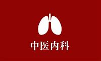

中医内科
中医内科是运用中医学理论和方法治疗内伤疾病及外感病、传染病等临床科室。它涵盖了多个中医临床专科体系，并涉及广泛的内脏疾病。以下是中医内科的一些核心特点和内容：
1.理论体系：中医内科主要依据中医基础理论，包括阴阳五行、脏腑经络、气血津液、病因病机、四诊八纲、辨证施治等，来诊断和治疗疾病。这些理论为中医内科提供了坚实的理论基础。
2.治疗方法：中医内科的治疗方法多样，包括中药内服、针灸、推拿、拔罐、刮痧、气功、食疗等多种手段。这些方法旨在调和阴阳、疏通经络、扶正祛邪，从而达到治疗疾病的目的。
3.疾病范围：中医内科治疗的疾病范围广泛，包括肺系病证、心系病证、脾胃系病证、肝胆病证、肾系病证、气血津液病、肢体经络病、外感热病和虫病等多种病症。
4.辨证施治：中医内科强调辨证施治，即根据患者的具体症状、体质、病因等，综合分析并确定治疗方案。这种个体化的治疗方法体现了中医的整体观念和个体化治疗原则。
5.预防保健：中医内科还注重疾病的预防和保健，通过调节饮食、作息、情绪等方式，提高患者的身体素质和免疫力，预防疾病的发生和发展。
